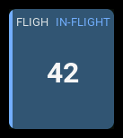
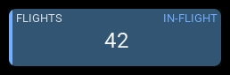
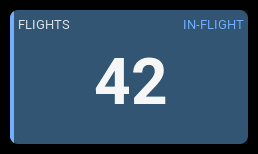
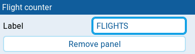

Flight counter
| 1x2 | 2x1 | 2x2 |
|---|---|---|
 |
 |
 |
Displays the model's GV9 flight total and highlights a detected active flight. Flight tracking is shared by AeroGrid dashboards and does not require a visible Flight counter.
Settings

| Setting | Default | What it does |
|---|---|---|
| Label | FLT | Panel heading. Clear it to restore the default. |
Configure arming, detection, optional sounds, and the required GV9 reservation in Model settings. Those settings apply across the model's dashboards; this panel only configures its label. For migration, see Older layouts.
Behavior
Each confirmed flight start increments the total once. Detection continues on hidden dashboards and does not depend on the number of counter panels. Telemetry loss or reducing motor output after confirmation does not end a flight. Continuous disarming for the configured end window does; rearming within that window keeps the same flight open. An unavailable arm reading cannot confirm disarming.
If dashboard arm conditions conflict or settings change during a flight, the current flight finishes using its original condition and output. New flights wait until the configuration is consistent.
The Session reset switch cancels detection and clears its output without changing GV9. Disarm before another flight can be counted. AeroGrid does not write flight CSV files.
GV9 persists through model saving and transmitter restarts, but in-flight detection state does not. Changing model or restarting during a flight can lose its history and qualify it again.
States
| Condition | Presentation |
|---|---|
| Resting or qualifying | Count and normal styling, without a badge. |
| Qualified flight or pending disarm timeout | Count, blue active styling, and IN-FLIGHT badge. |
| Confirmed completion | Count retained and normal styling restored. |
| GV9 unavailable | -- and an N/A badge. |
| Configuration or persistence failure | Actionable service error; resolve it before relying on tracking. |